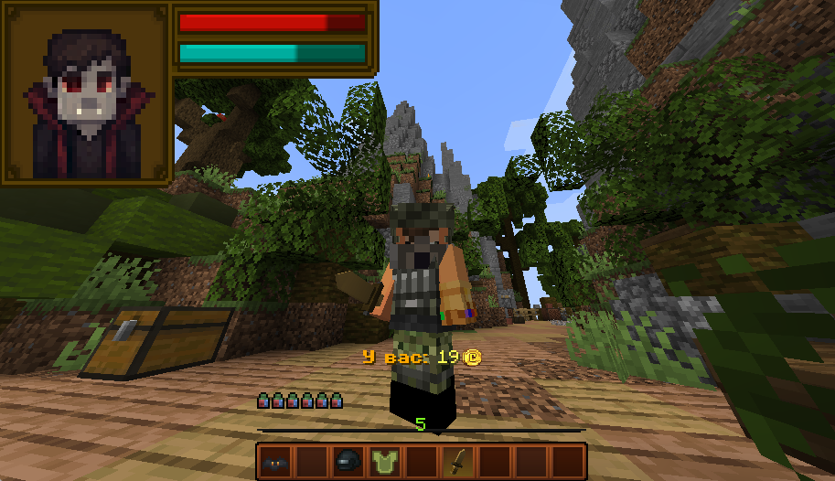
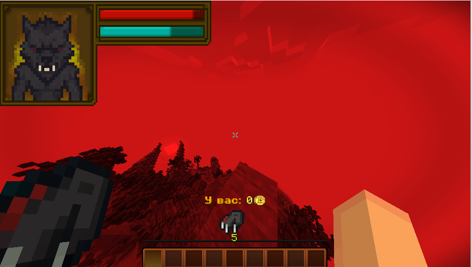

Добро пожаловать на LootBrawl.net!
LootBrawl.net – это уникальный Minecraft-сервер, где тебя ждёт захватывающая мини-игра: игроки собирают золото из сундуков, затем за золото покупают мешочки с лутом, а от полученного лута зависимо вступают в бой. Побеждает тот, кто останется последним на арене!
Главная особенность проекта – система персонажей. У нас есть уникальные герои, которых можно прокачивать, улучшать или покупать новых. Каждый персонаж обладает своими способностями, и при их использовании расходуется мана – один из ключевых ресурсов, наряду с золотом.
В каждом бою тебе предстоит выбирать тактику, стремиться к максимальному развитию своего героя и побеждать в динамичных PvP-сражениях, где каждая секунда на счету.
Наш сервер постоянно обновляется, расширяя список игровых режимов и персонажей. На данный момент доступны три основных персонажа, и в будущем их станет ещё больше, чтобы каждый смог найти себе идеального бойца.
Здесь ты сможешь испытать настоящий драйв от сражений, прокачивая своего героя, улучшая его способности и развивая стратегию. Каждая победа приближает тебя к званию легенды LootBrawl.net!
Присоединяйся к нашему сообществу, окунись в мир эпических сражений и начни своё приключение уже сегодня!